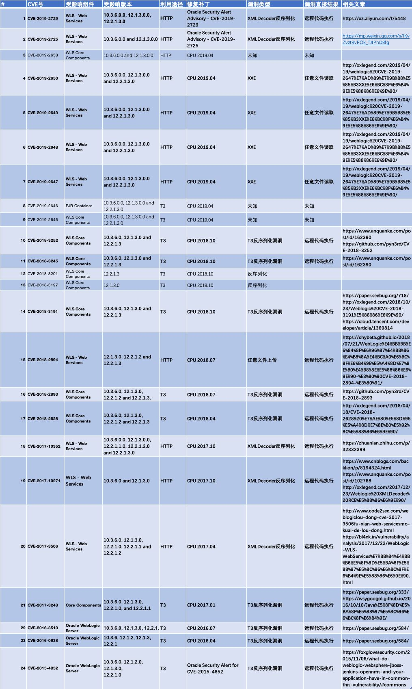

补丁
CVE-2016-0638的环境其实就是CVE-2015-4852打上补丁，我打的是p22248372_1036012_Generic和p20780171_1036_Generic这两个补丁， 安装的过程还算烦琐，不过打上补丁后原先的payload已经打不通了。
{kind=link}
定位到抛出异常的地方，可以看到这里多了一个ClassFilter.isBlackListed方法。

在weblogic.rmi.ClassFilter#DEFAULT_BLACK_LIST可以看到黑名单。
{kind=link}
影响范围
10.3.6
12.1.2
12.1.3
12.2.1
漏洞分析
上面可以看到在weblogic.rjvm.InboundMsgAbbrev.ServerChannelInputStream#resolveClass中设置了黑名单校验， 所以绕过的思路应该是找到一处不使用ServerChannelInputStream方法进行反序列化的地方，然后通过二次反序列化达到绕过的目的。 这个漏洞使用的是weblogic.jms.common.StreamMessageImpl#readExternal方法，这个方法中含有一个readobject方法可以用来反序列化。 而var5来自于上面var4，var4又是从payload获取的。所以，这里来跟一下payload是怎么来的，以及后面到序列化前的过程。
{kind=link}
这里var1从InputStream流var0中获取一个长度int，接着和var0一起传入copyPayloadFromStream方法。
{kind=link}
在copyPayloadFromStream方法中又将长度与ChunkSize的2倍进行比较，将较小的值与InputStream流传入Chunk.createOneSharedChunk方法中。

createOneSharedChunk方法其实就是从InputStream流中取出一块返回。
{kind=link}
最后将这块返回的数据进行反序列化，到这里思路大概就是将之前CVE-2015-4852反序列化的点拿来触发weblogic.jms.common.StreamMessageImpl#readExternal方法中的反序列化， 而不是直接把cc链反序列化数据一次性传过去，这样就能达到绕过第一次反序列化中resolveClass方法的黑名单限制。
{kind=link}
工具链接
// 需要用jdk6编译
https://github.com/5up3rc/weblogic_cmdEXP构造思路
Weblogic漏洞图(2019前)
{kind=link}
There Is Nothing Below
 Turn at the next intersection.
Turn at the next intersection.